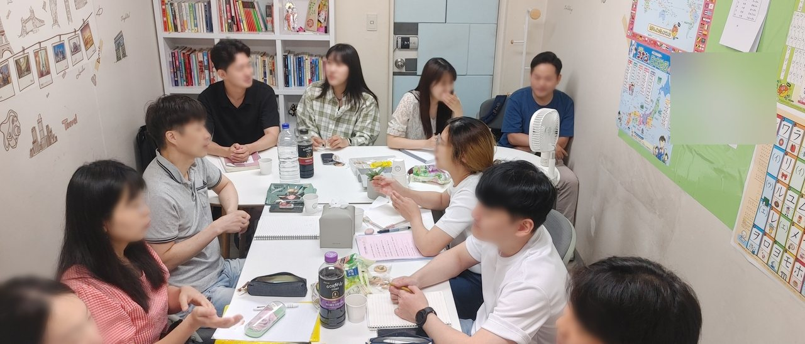
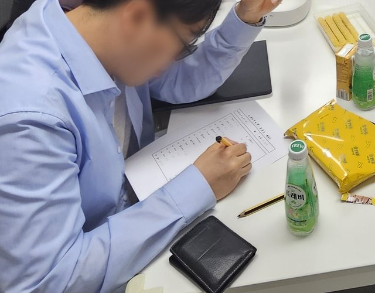
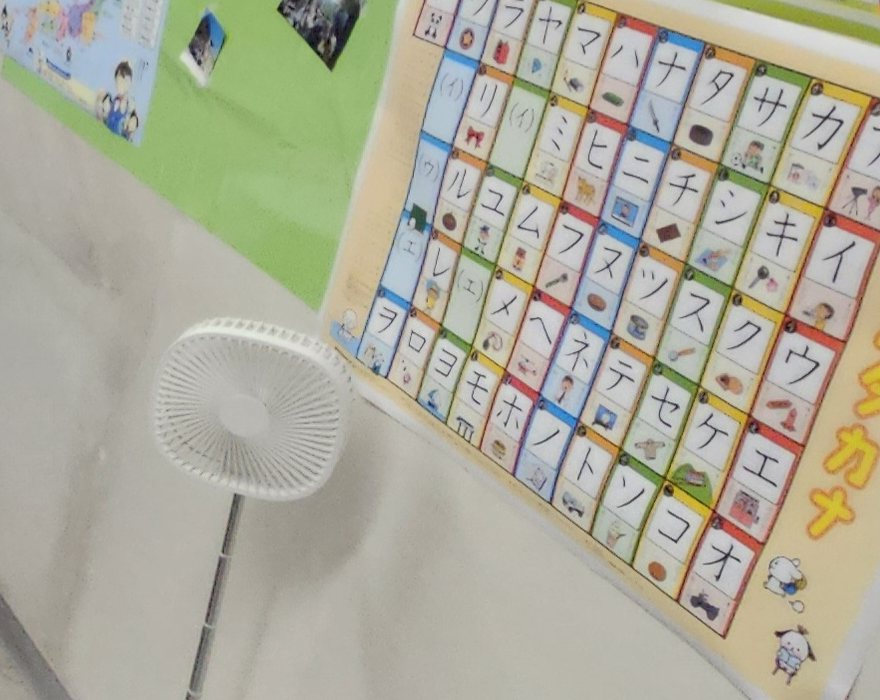

01 EST. 2014 Living Japanese
교과서의 일본어가 아니라,
일본인 친구들이 쓰는
일본어를 배웁니다
문법이 틀려서가 아닙니다. 같은 상황에서 일본인이 고르는 말이 따로 있고, 교과서는 거기까지 싣지 못합니다. 와가마마스쿨은 2014년부터 그 차이를 가르쳐 왔습니다. 한 테이블에 둘러앉아, 시험이 아니라 대화를 연습합니다.
수업을 한 번 보고 결정하셔도 됩니다. 등록을 먼저 권하지 않습니다.
교과서
はじめまして。私はキムです。
처음 뵙겠습니다. 저는 김입니다.
진짜 회화
キムです。よろしく〜
김이야. 잘 부탁해~
같은 자리에서, 일본인은 이렇게 말합니다.

선생님을 마주 보고 앉는 대신, 옆자리 사람과 이야기하게 되는 자리입니다.

02 교과서와 실제 회화 Textbook / Real
틀린 문장이 아니라,
쓰이지 않는 문장입니다
교과서의 문장은 문법적으로 정확합니다. 다만 그 상황에서 일본인이 그 문장을 고르지 않을 뿐입니다. 와가마마스쿨이 가르치는 것은 이 한 칸의 차이입니다.
이름을 막 알게 된 순간
교과서
はじめまして。私はキムです。よろしくお願いします。
처음 뵙겠습니다. 저는 김입니다. 잘 부탁드립니다.
진짜 회화
キムです。よろしく〜
김이야. 잘 부탁해~
어디가 다른가 — 왼쪽도 맞는 문장입니다. 격식 있는 자리에서는 그대로 씁니다. 다만 또래끼리 이름을 주고받는 자리에서는 정중형을 길게 늘이지 않습니다.
같이 먹다가 맛있을 때
교과서
とてもおいしいです。
매우 맛있습니다.
진짜 회화
これ、めっちゃおいしい！
이거 진짜 맛있다!
어디가 다른가 — とても는 글이나 격식 있는 자리의 말입니다. めっちゃ는 원래 간사이 말이었지만 지금은 젊은 세대가 지역을 가리지 않고 씁니다. 누구에게 쓸 수 있는 말인지까지 알아야 고를 수 있습니다.
상대 이야기를 듣다가
교과서
そうですか。
그렇습니까.
진짜 회화
へえ、そうなんだ。
오~ 그렇구나.
어디가 다른가 — そうですか는 억양에 따라 관심 없음으로 들립니다. 일본어 대화는 맞장구로 굴러갑니다. 이것만 바꿔도 대화가 덜 끊깁니다.
더 권하는데 사양할 때
교과서
いいえ、けっこうです。
아니요, 괜찮습니다.
진짜 회화
あ、大丈夫です。
아, 괜찮아요.
어디가 다른가 — けっこうです는 선을 긋는 말입니다. 점원에게는 쓰지만 친구가 더 권할 때 쓰면 차갑게 들립니다.

왼쪽은 교과서가 싣는 문장, 오른쪽은 같은 자리에서 일본인이 고르는 말입니다. 실제 수업에서는 여러분이 만날 상황부터 골라 연습합니다.
03 일본인들과 함께 Outside the classroom
소풍을 가고, 수학여행을 떠나고,
운동회를 엽니다
일본 학교가 한 해 동안 하는 행사를 우리도 합니다. 일본인들과 같은 날 같은 자리에서 하루를 보냅니다. 교실에서 배운 말은 대개 그날 처음으로 입 밖에 나옵니다.
-
SPRING
소풍
遠足（えんそく）
도시락을 싸서 함께 나갑니다. 교실 밖에서는 외운 문장이 아니라 그 순간의 말이 필요해집니다.
ここ、座ってもいい？여기 앉아도 돼?
사진 준비 중
-
TRIP
수학여행
修学旅行（しゅうがくりょこう）
일정을 함께 짜고 함께 움직입니다. 길을 묻고, 주문하고, 밤에는 이야기가 길어집니다.
明日、何時に集合？내일 몇 시에 모여?
사진 준비 중
-
AUTUMN
운동회
運動会（うんどうかい）
팀을 나눠 뜁니다. 응원하는 말은 교재에 없지만, 그날 가장 많이 쓰는 말입니다.
がんばって！ ナイス！힘내! 나이스!
사진 준비 중
행사 사진은 아직 이 자리에 없습니다. 다음 행사에서 찍어 채워 넣겠습니다.
Wagamama School 와가마마스쿨 · since 2014
04 교실 The Room
책장, 노트,
누가 사 온 간식
사진을 위해 정리하거나 새로 놓은 물건은 없습니다.



05 레벨 The Ladder
가나에서 시작해, 농담이 통할 때까지
급수로 나눈 구분이 아닙니다. 지금 입에서 어떤 말이 나오는지로 나눕니다. 시작 지점은 상담에서 함께 정합니다.
-
가나부터
히라가나와 가타카나를 읽습니다. 읽히기 시작하면 간판과 메뉴판부터 달라집니다. 문장을 아직 만들지 못해도 이 테이블에 앉을 수 있습니다.
おはよう！아침 인사가 입에서 먼저 나오게
-
말이 트이는 구간
필요한 말이 한 문장씩 나옵니다. 주문하고, 길을 묻고, 약속을 잡습니다. 문장이 완결되지 않아도 뜻은 건너갑니다.
それ、どこで買ったの？그거 어디서 샀어?
-
대화가 이어지는 구간
혼자 말하는 대신 주고받습니다. 맞장구가 먼저 자연스러워집니다. 침묵이 덜 무서워집니다.
えー、それでどうなったの？헐, 그래서 어떻게 됐어?
-
농담이 통하는 구간
뜻만이 아니라 말투를 고릅니다. 같은 문장을 상대에 따라 다르게 말합니다. 웃기려고 한 말에 상대가 웃습니다.
またまた〜、うそでしょ？에이~ 거짓말이지?
다음 단계로 넘어가는 시점은 선생님이 수업 중에 판단합니다. 반 편성·시간표는 {{SCHEDULE}}, 한 반 정원은 {{CLASS_SIZE}} 입니다.

06 선생님 The Teacher
같은 자리에서 막혀 본 사람이
가르칩니다
수업은 한국인 선생님이 진행합니다. 이 언어를 외국어로 배워 본 사람이라, 한국어 화자가 어디서 왜 막히는지 압니다. 하고 싶은 말을 꺼내면 일본인이 실제로 쓰는 문장으로 바꿔 주고, 그 자리에서 한 번 더 말해 봅니다. 왜 그렇게 말하는지는 한국어로 정확히 설명합니다.
일본인의 말은 커뮤니티에서 직접 듣고 써 봅니다 — 소풍과 운동회가 이 수업의 나머지 절반입니다. 선생님 소개는 준비되는 대로 이 자리에 싣겠습니다.
{{TEACHER_NAME}} {{TEACHER_ROLE}} · {{TEACHER_BIO}}
07 등록 전에 Before you join
여기서 되는 것과 되지 않는 것
학원마다 맞는 사람이 다릅니다. 맞지 않는 곳에 오래 앉아 계시는 것보다, 처음에 아시는 편이 낫습니다.
여기서 되지 않는 것부터 알려 주세요.
히라가나도 모릅니다. 들어갈 수 있습니까?
한 반에 몇 명입니까?
말이 아예 나오지 않는데 소그룹이 부담스럽습니다.
소풍이나 운동회에 꼭 참여해야 합니까?
수강료와 시간표가 궁금합니다.

08 문의 First step
결정은 앉아 보신 뒤에
하셔도 됩니다
카카오톡으로 지금 일본어 수준과 가능한 요일·시간대를 남겨 주시면, 들어가실 수 있는 반을 알려 드립니다. 수강료와 시간표도 그때 함께 안내합니다.
카카오톡이 가장 빠릅니다. 문의는 카카오톡 채널로 받습니다.
- 주소{{ADDRESS}} {{ADDRESS_DETAIL}}
- 오시는 길{{STATION}}
- 전화{{PHONE}}
- 상담 시간{{HOURS}}